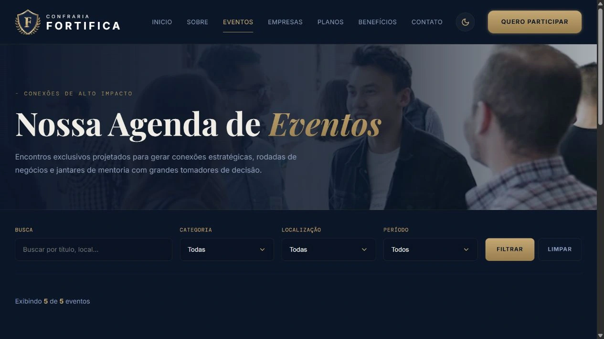
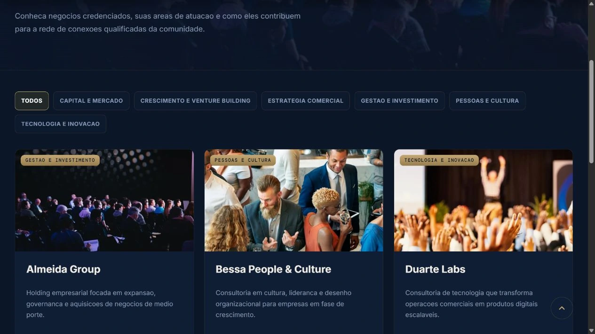
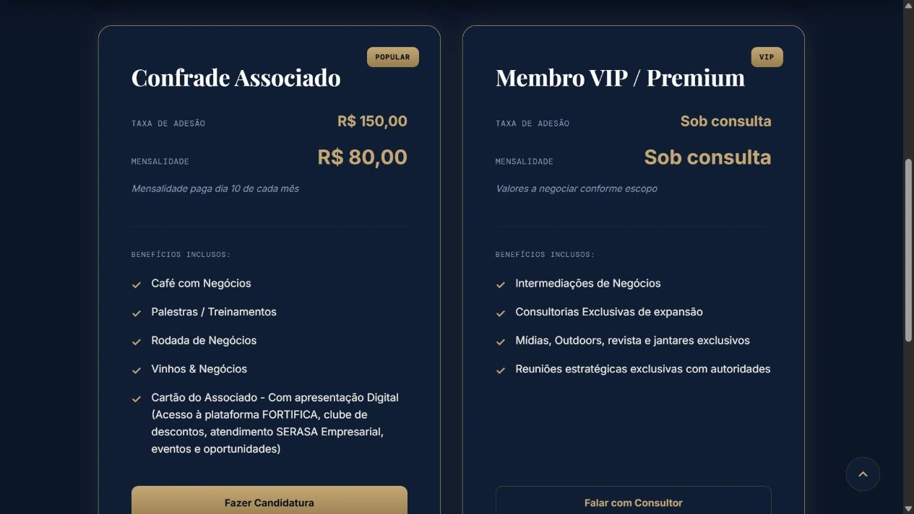
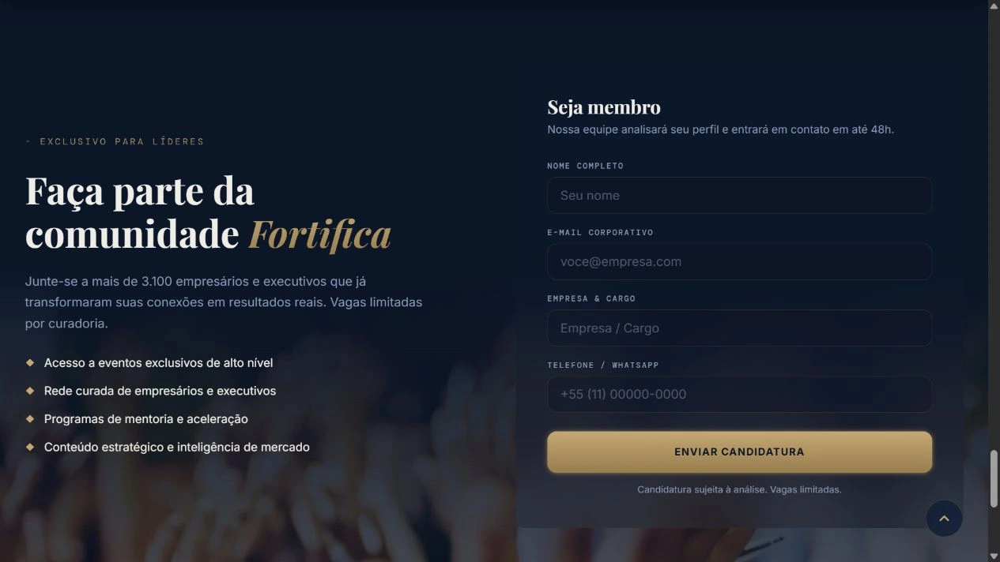

Uma rede de negócios.
Uma presença em comum.
Website para apresentar a Confraria Fortifica e organizar o acesso a eventos, empresas e formas de participação. Uma interface institucional com linguagem editorial, conteúdos agrupados por finalidade e chamadas para candidatura ao longo da navegação.

A abertura apresenta o universo da confraria e os caminhos para explorar o site.
Da apresentação
à descoberta da rede.
A home reúne os temas centrais do site: apresentação da comunidade, eventos, empresas e participação. O carrossel de abertura combina fotografia e mensagem institucional, enquanto o menu mantém acesso às páginas de cada área.
A agenda permite consultar eventos por busca, categoria, localização e período. No diretório de empresas, os segmentos organizam a exploração dos cartões, que apresentam nome, área de atuação, descrição e acesso ao perfil de cada negócio.

Filtros reunidos antes da listagem, com consulta por período.

Uma estrutura comum para apresentar os diferentes perfis da rede.
Azul profundo.
Detalhes em dourado.
A paleta aproxima a interface da assinatura da confraria. O dourado aparece nas chamadas, nos destaques e nos elementos de navegação.
Hierarquia com
um tom editorial.
Playfair Display dá expressão aos títulos. Inter sustenta os textos e controles, com DM Mono nos rótulos e nas informações de apoio.
A rede também
se apresenta em imagens.
Fotografias de encontros e ambientes empresariais contextualizam os conteúdos. Os cartões repetem uma hierarquia entre imagem, assunto e ação.
Conhecer as opções.
Iniciar o contato.
A página de planos organiza as modalidades em cartões com condições, benefícios e chamadas próprias. Essa apresentação faz parte do percurso entre conhecer a comunidade e conversar sobre a participação.
Na home, a área de candidatura reúne a apresentação da proposta e um formulário com nome, e-mail corporativo, empresa e cargo, além de telefone. A chamada de participação reaparece ao longo da navegação para dar acesso a essa etapa.

As modalidades compartilham a organização das informações e das ações.

Contexto e campos de candidatura reunidos em duas colunas no desktop.
A mesma identidade.
Uma leitura em coluna.
No celular, a navegação se recolhe em um menu compacto e os títulos se distribuem em mais linhas. As chamadas da home ganham uma disposição vertical, preservando o contraste entre o fundo azul e os destaques em dourado.
O diretório apresenta os cartões de empresas em sequência, e o formulário mantém os campos empilhados. A hierarquia acompanha a redução da tela sem depender da composição em colunas do desktop.